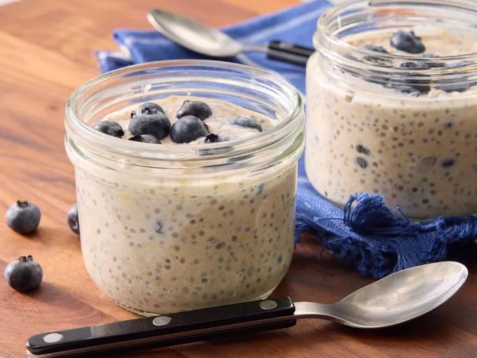

Overnight Oats

I love overnight oats! They're easy to make-ahead for a quick, on-the-go breakfast.
Though this recipe calls for blueberries, you can use almost any fruit.
Bananas, peaches, or any variety of berries work best. Top with your favorite nuts or seeds.
Ingredients
- 1/3 cup milk
- 1/4 cup Greek yogurt
- 1/4 cup rolled oats
- 2 teaspoons honey
- 2 teaspoons chia seeds
- 1/4 teaspoon ground cinnamon or more to taste
- 1/4 cup fresh blueberries
Steps
- Gather all ingredients.
-
Combine milk, yogurt, oats, honey, chia seeds, and cinnamon in a 1/2-pint jar with a lid;
cover and shake until combined.
- Fold in blueberries.
- Cover and refrigerate, 8 hours to overnight. Enjoy!